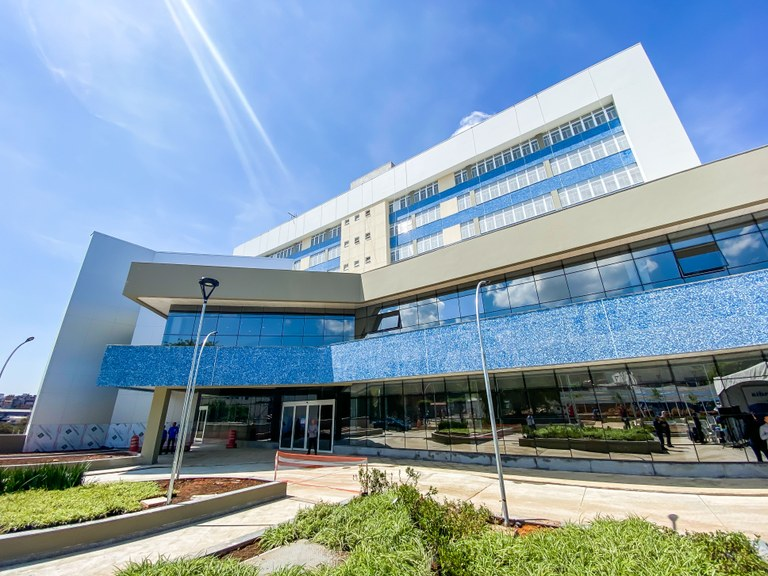
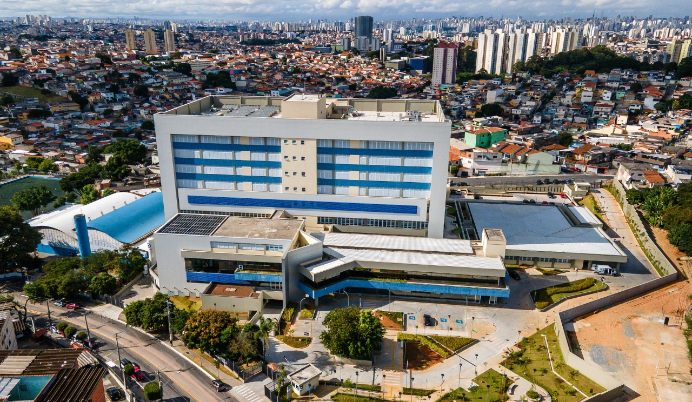

╭₊˚๖ Desenvolvimento ๖₊˚
❖ Informações
Distrito de classe média na região norte do município de São Paulo.
O distrito conta com alguns pontos de comércio 24h e farmácias que se revezam em plantão.
O trânsito está cada vez mais complicado devido a falta de grandes avenidas no distrito. A baixíssima infraestrutura, vias estreitas e calçadas inadequadas junto ao grande fluxo de veículos pesados que abastecem o comercio e transportes coletivos, tem tornado sua rua principal intransitável em horários de pico. A chegada do metrô (Linha 6 - Laranja), prevista para 2021 tem como objetivo, além de interligar de maneira mais rápida e eficaz a população da Brasilândia ao centro da cidade, pretende melhorar esse cenário.
Hospital Vila Brasilândia


Outro sinal de Desenvolvimento muito forte na atual Brasilândia é a Obra da Linha-6 Laranja que está ocorrendo tem cerca de 4 anos, apesar da evidente demora tal Obra é um grande avanço para toda população do Distrito.